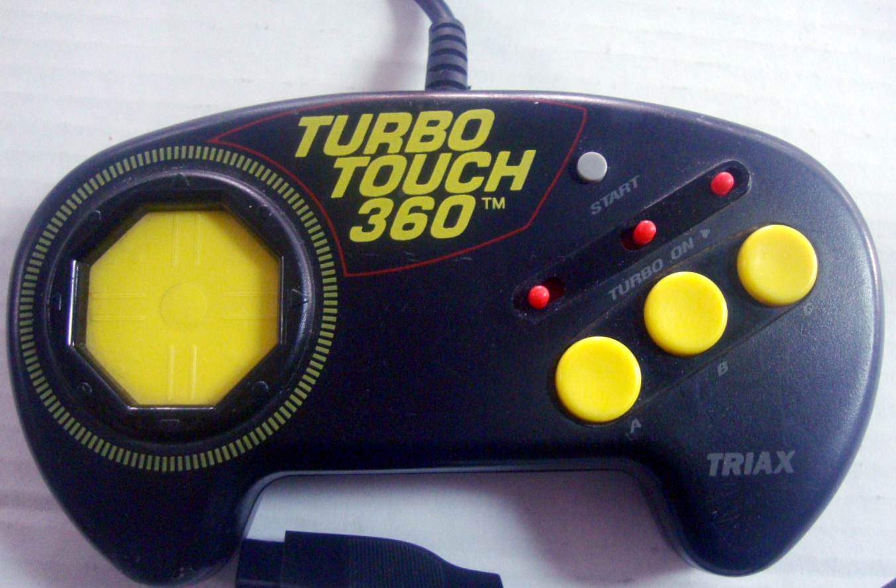

The 360 That Wasn't
In 1992 the Turbo Touch 360 replaced the D-pad with an octagonal plate of capacitive sensors — you slid your thumb to steer, never pressing down. It was the museum's only touch-surface game controller, a decade before trackpads were ordinary, and nobody wanted it.

Every control surface on this earth eventually commits one of two sins. It wears out, or it stops being noticed. The D-pad — that cross of plastic and rubber dome Nintendo more-or-less invented in 1982 — was charged with neither. It was charged with hurt. Marathon sessions of Street Fighter II and Sonic the Hedgehog left thumbs blistered, fatigued, and numb. Somewhere a market for pain relief opened up, and into it, in 1992, walked a $34.95 box from a company called Triax that wanted to end the D-pad by replacing it with nothing that moved at all.
The Turbo Touch 360 looked almost normal from across the room. The devil was where the pad should be: instead of a cross of mechanical switches, there was a smooth octagonal plate under a low-friction membrane. Eight capacitive sensors sat under that plate, arranged in the eight compass directions. To steer, you did not press. You slid your thumb across the surface, and the plate read where your thumb was — not how hard you pushed it — and sent that as a direction. Straddle two adjacent sensors and you got a diagonal. No travel, no click, no switch to fatigue. The whole thing was documented in Triax's own patent US5367199, "Sliding contact control switch pad," which included a central "null zone" where the thumb could rest without firing anything.
That is the same sensing principle as the laptop trackpad and the smartphone — only here it was aimed at a game controller in 1992, a full decade before touch surfaces became ordinary, and at a thing nobody had asked to be touchy. That is genuinely strange, and the museum holds it as the only touch-surface game controller in the place. It sits apart from the HP-150's touchscreen (a pointing surface bolted to a screen) and the Casio PB-1000's fixed grid of zones; this is a thumb-slid proximity plate, an early finger for the future, sold as a medicine.
Because that is the other layer of the story: the marketing was medical. Triax pushed the controller as a cure — for blisters, for thumb fatigue, for the specific, miserable "numb thumb" that grinding on a rubber dome for three hours produced. The claim shipped with an endorsement from an actual orthopedic surgeon, Dr. Robert Grossman, who specialized in sports injuries. A doctor, vouching for a D-pad. That was consumer health marketing applied to an input device, a bizarre early rehearsal for the ergonomic-gaming industry of the 2010s — and a reminder that the 1982 D-pad had never really been interrogated for its physical cost until somebody tried to sell against it.
Then the name. The "360" promised continuous, full-circle control, and the hardware behind the promised revolution quietly declined to provide it. The plate only detected eight touch zones — the same eight directions a mechanical D-pad already produced. Most Genesis and SNES games only responded to eight directions anyway, so the mismatch was mostly a marketing fiction rather than a functional lie. But the gap between the name and the mechanism became part of the artifact's character: a product that sold you the future of thumb while actually shipping the present of the pad. The "360 that wasn't."
And it failed — gloriously, instructively. Reviewers found the plate too sensitive; games read accidental input when the thumb hiccuped. The D-pad never went away. By 2006, IGN's Craig Harris ranked the Turbo Touch 360 the ninth-worst video game controller of all time, right up there with the truly broken. The footnotes got even stranger: Sega Retro records that Triax reportedly offered "big," three-foot versions of the thing for $2,000 — a serious product or a marketing stunt, nobody knows.
I collect this machine not because capacitive touch won — it did, everywhere, a decade later — but because of the specific, doomed shape of the bet. It bet that an input device could sell itself as medicine, that proximity could beat force, that a controller could be invisible. It was too early by exactly long enough for the idea to look ridiculous and prophetic at once. The thumb slid, felt nothing, fired nothing, and — for most players — just didn't work as a game pad. But the sensing principle it fumbled toward is now in every pocket, every bag, every pair of otherwise ordinary hands.